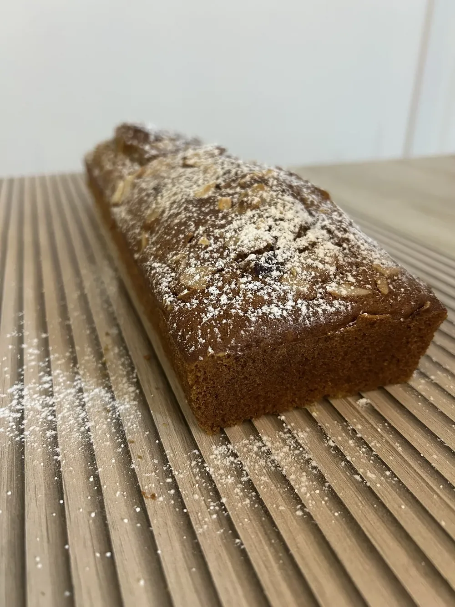

Bizcocho jugoso de calabaza y almendras
La calabaza aporta una textura tierna a este bizcocho sencillo. Las almendras dejan pequeños trozos crujientes y la canela le da un aroma suave.
- Preparación
- 15 min
- Horno
- 35–45 min
- Raciones
- 4
- Dificultad
- Fácil

Ingredientes
4 porciones
Marca lo que ya tienes.
Las cantidades son orientativas solo cuando así lo indica la propia receta.
Preparación paso a paso
- Precalienta el horno a 175 °C, con calor arriba y abajo y sin ventilador. Engrasa un molde pequeño.
- Si partes de calabaza cruda, pela y pesa 200 g, córtala en dados, cocínala hasta que esté tierna, escúrrela y tritúrala. La referencia de unos 170 g de puré cocido es aproximada y puede variar según la cocción. Deja templar.
- Bate los huevos con el azúcar durante 2–3 minutos, hasta que queden espumosos.
- Incorpora el aceite y la calabaza triturada y mezcla hasta integrar.
- Añade la harina, la levadura, la canela, la sal y la ralladura de naranja, si la utilizas. Mezcla solo lo necesario.
- Agrega 30 g de almendra troceada, vierte la masa en el molde y reparte los 10 g restantes por encima.
- Hornea a media altura durante 35–45 minutos, comprobando desde el minuto 35. El palillo debe salir sin masa cruda, aunque conserve alguna miga húmeda.
- Deja reposar 15 minutos, desmolda y enfría por completo.
UN POCO DE OFICIO
Para que te salgan bien
Cómo conseguir una miga jugosa
Escurre el líquido sobrante de la calabaza, pero no dejes el puré seco. Mezcla la harina sin batir en exceso y evita alargar el horneado cuando el bizcocho ya esté hecho.
MÁS SOBRE ESTA RECETA
↑ Volver a la recetaUn bizcocho fácil para aprovechar la calabaza
Si te ha sobrado calabaza de otra preparación, esta es una manera sencilla de convertirla en algo dulce. La receta utiliza un puré bien escurrido y una cantidad moderada de almendra troceada: la clave está en conservar la humedad sin que la masa quede pesada.
De la calabaza cruda al puré
Puedes partir de calabaza cruda o tenerla ya cocida. La equivalencia de peso es orientativa, porque depende del agua que pierda durante la cocción. Si preparas el puré antes, deja que se temple para incorporarlo a la masa.
Conservarlo y servirlo
Una vez frío, guarda el bizcocho en un recipiente bien cerrado. No necesita nada más para acompañar un café o una merienda.
La equivalencia de calabaza cruda y cocida es aproximada; puede variar en función del método de cocción.
Otras recetas que te pueden gustar
Más desayunos y postresBombas de calabaza y queso con jamón
Bolitas rebozadas de calabaza, queso y jamón, hechas en sartén o air fryer.

Boniato al horno con ajo, pimentón y romero
Boniato en dados con ajo, pimentón y romero: una guarnición al horno sencilla.

Tortitas americanas esponjosas
Tiernas, altas y muy fáciles de hacer. El secreto está en mezclar lo justo y dejar reposar unos minutos la masa antes de pasar por la sartén.
Opiniones sobre esta receta
Consultando valoraciones…